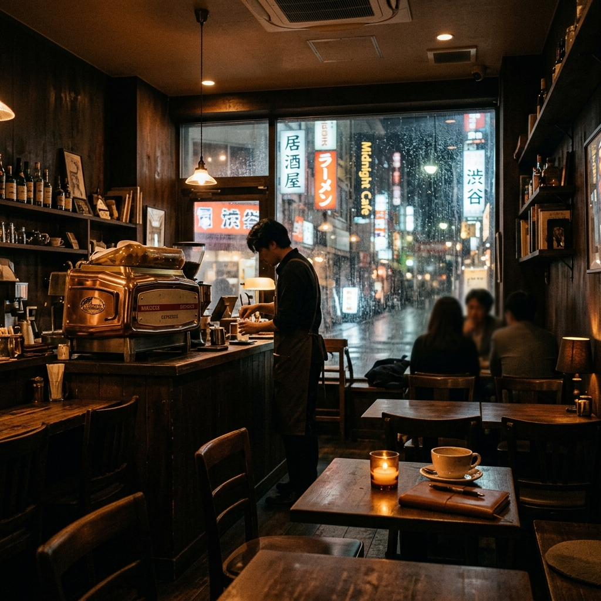
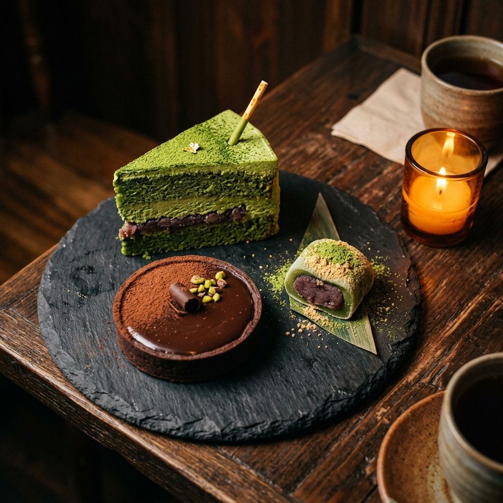

Pour-Over Bar
Slow, deliberate, and made entirely to your preference. Strength, temperature, bloom time — all yours to decide.
A quiet café nestled in the winding lanes of Tokyo's 20th Ward. We brew our coffee slowly, speak softly, and keep the lights low. Come as you are. Stay as long as you need.

Our Story
Anteiku was not built to be found easily. It was built for those who already know the kind of quiet they are looking for. Our manager, Yoshimura-san, opened these doors with one belief: that every soul, however burdened, deserves a warm cup of coffee and a place to sit without judgment.
"The coffee here does not just wake you. It reminds you that morning is still possible, even after the longest night."
— Yoshimura Kuzen, Founder
We source single-origin beans from the highlands of Ethiopia and the volcanic slopes of Sumatra, roasted in-house each morning. Everything on our menu is made by hand, with patience. We do not rush here.
The Space
Every corner of Anteiku was designed to let you disappear. The walls hold old music. The candles never burn past midnight. The bookshelves along the back wall are for reading, never selling. If you find a book you love, leave one behind.
Slow, deliberate, and made entirely to your preference. Strength, temperature, bloom time — all yours to decide.
No overhead fluorescence. Only warm beeswax candles, replaced by hand each evening at dusk.
Jazz, ambient, and classical. A curated stack that changes with the weather. Requests are considered but never guaranteed.
Our window booth faces the alley. On rainy nights, it is always the first to fill. We keep it unbooked by rule.

Hours
Guest Words
Stay Close
We send one letter per month — the new seasonal blend, upcoming evenings, and whatever Yoshimura-san feels like writing. No noise. Just warmth.